Префектура Фукуока · Укиха · ремёсла и еда
Укиха за два дня: вода, угорь, керамика с солью и книжное кафе в рыбной лавке
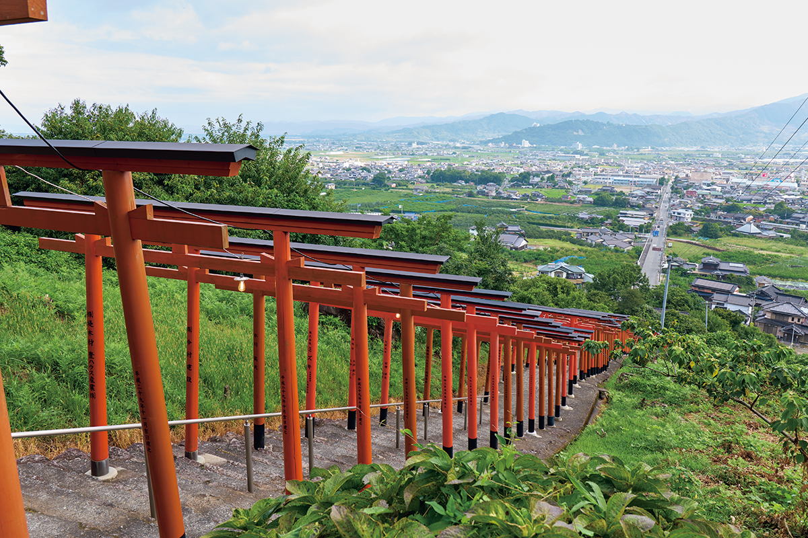
Укиха лежит в долине реки Тикуго, примерно в часе езды от Хакаты. Здесь выращивают фрукты и чай, лепят керамику и пекут сладости, и каждый местный скажет, что всё дело в воде.
Отель
Fairfield by Marriott Fukuoka Ukiha: ночлег без ресторана
Укиха находится на юго-востоке префектуры Фукуока, примерно в 50 км от Хакаты. Удобнее всего изучать её с базой в Fairfield by Marriott Fukuoka Ukiha. Отель открылся в 2023 году и входит в сеть Fairfield by Marriott, которая строит гостиницы рядом с придорожными станциями митиноэки: в 2025 году таких отелей по всей Японии было 29.
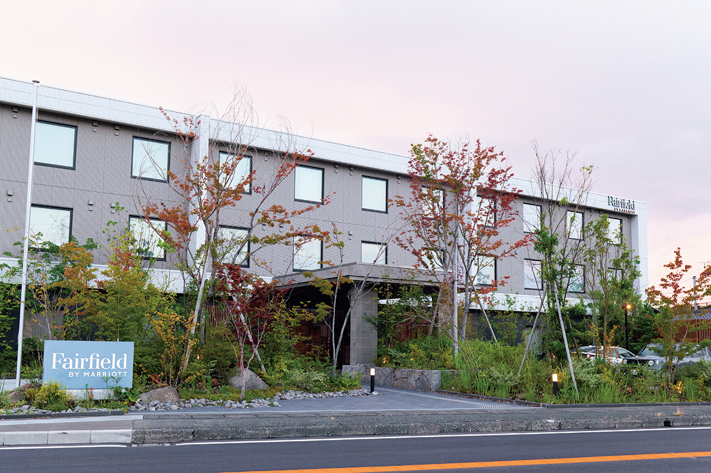
Ресторана и общей бани в отеле нет, и это сделано нарочно. Гостиница рассчитана только на ночлег, а обедать и ужинать предлагают в местных заведениях и выбирать их по настроению. Вместо ресторана здесь общий лаунж и небольшие, но продуманные номера, так что в отеле удобно и работать на выезде.
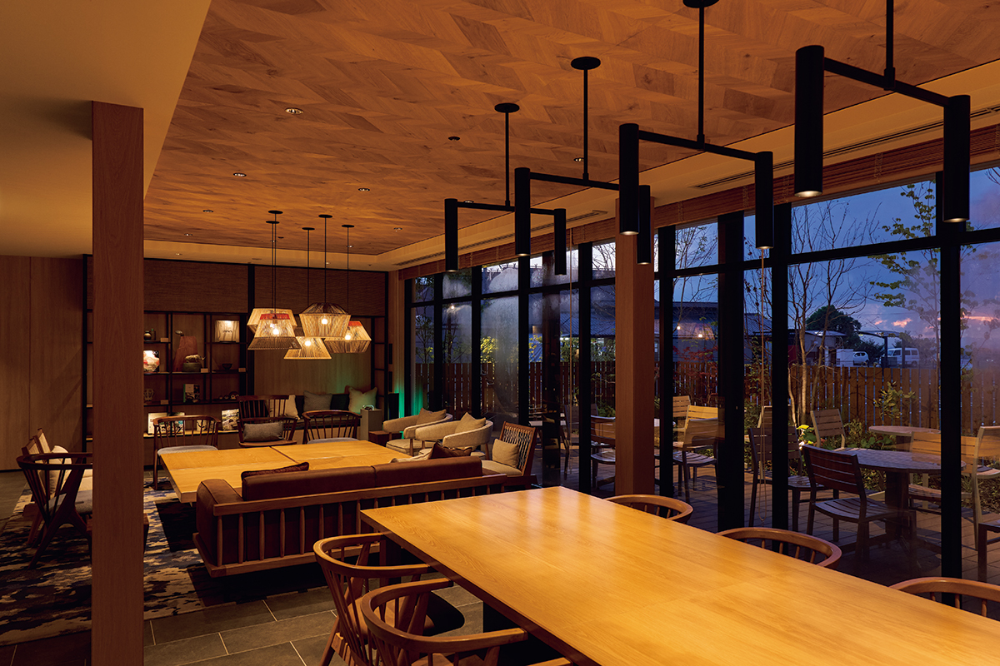
На машине за десять минут можно доехать до онсэнов на реке Тикуго и до старого квартала с белыми стенами. Вокруг много ферм, где фрукты собирают сами, а на соседней придорожной станции дают напрокат велосипеды.
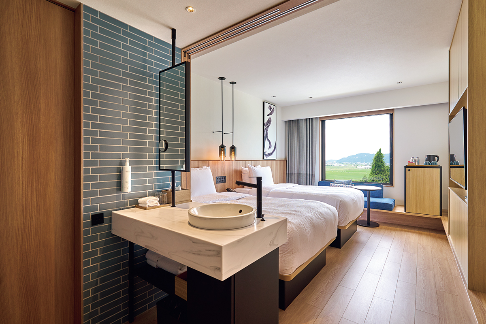
В отеле есть небольшой магазин с местными продуктами и лёгкой едой, но исполняющий обязанности управляющего советует другое.
«Раз уж вы приехали, купите еду на придорожной станции и спокойно поужинайте у нас в лаунже»
исполняющий обязанности управляющего
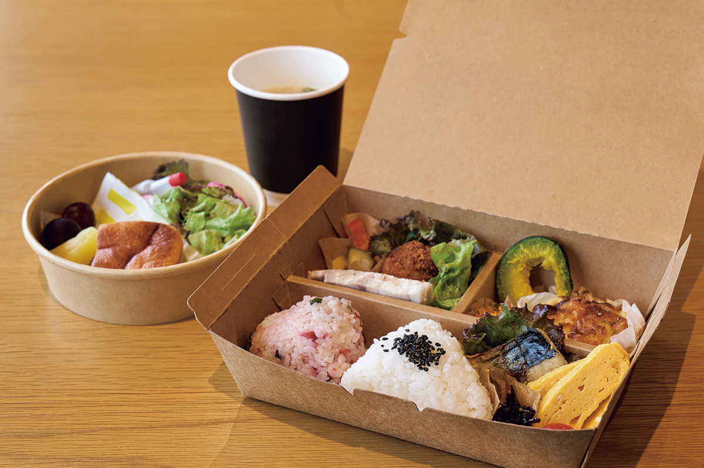
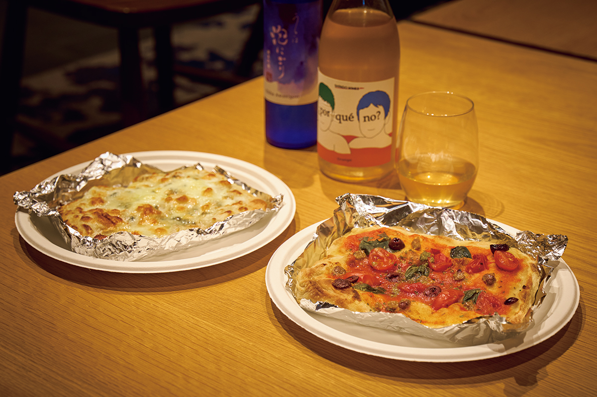
Гостей отеля пускают на соседнюю придорожную станцию с 8:00, ещё до открытия, чтобы без спешки выбрать завтрак и подарки. Номер на ночь стоил от 15 730 иен с налогом и сервисным сбором в 2025 году.
Fairfield by Marriott Fukuoka Ukiha
- Адрес
- префектура Фукуока, Укиха, Укиха-мати, Ямакита, 734-6
- Телефон
- +81 943-76-9120
- Цены / Вход
- 15 730 иен за номер за ночь, с налогом и сервисным сбором
- Заезд / выезд
- 15:00 / 11:00
- Как добраться
- около 10 минут на машине от развязки Хаки скоростной дороги Оита или около 7 минут от станции JR Укиха
По соседству
Придорожная станция «Укиха»
В мае 2025 года придорожную станцию «Укиха» обновили. Рынок с сезонными фруктами и овощами стал просторнее, появилась зона отдыха, а в здании открылась столовая «Кифунэ сёкудо», где готовят из местных продуктов. В соседнем центре «Укихако» дают туристическую информацию и с него удобно начинать знакомство с городом.
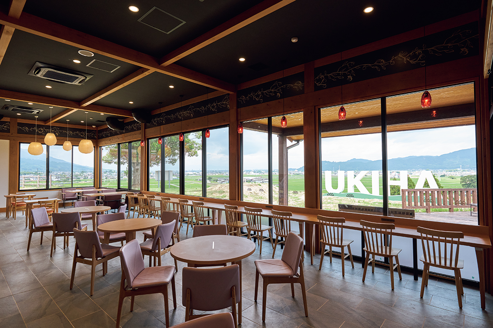
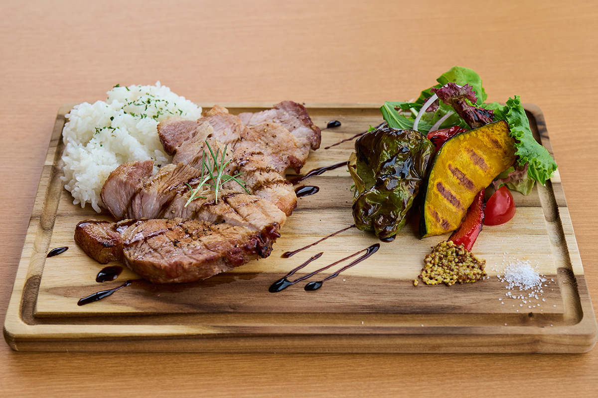
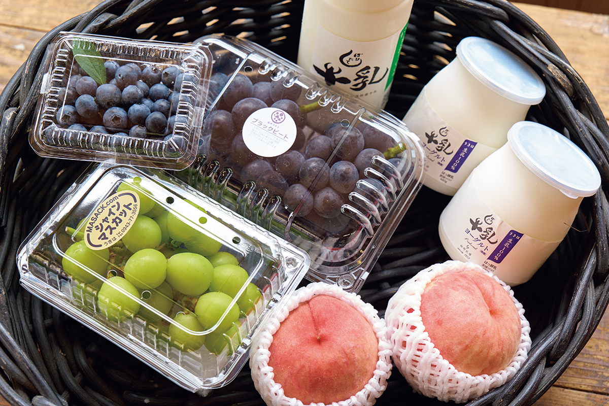
Придорожная станция «Укиха»
- Адрес
- префектура Фукуока, Укиха, Укиха-мати, Ямакита, 729-2
- Телефон
- +81 943-74-3939
- Часы работы
- 9:00–18:00 (столовая «Кифунэ сёкудо» 11:00–16:00, центр «Укихако» 10:00–17:00)
- Выходные
- второй вторник месяца (если это праздник, то следующий день)
День 1
Вода, угорь и виски
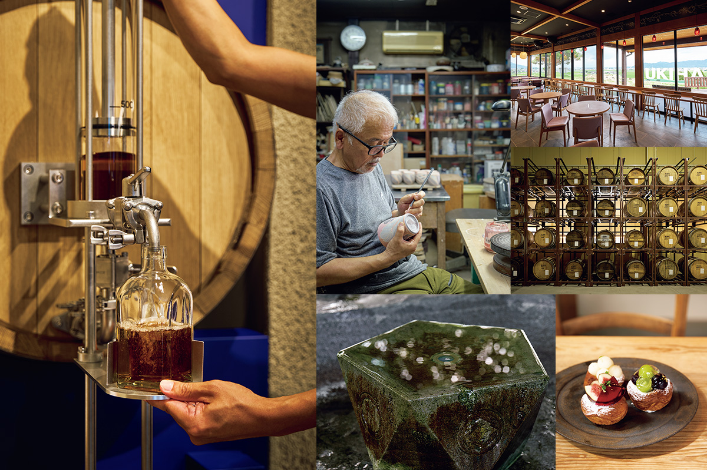
«Вода здесь по-настоящему хорошая». Эту фразу в Укихе повторяют почти все. Объяснение уходит в эпоху Эдо: когда край оказался под угрозой засухи, пятеро деревенских старост провели сюда воду. С тех пор на подземных водах и плодородной земле держится сельское хозяйство, и сады, и многие другие ремёсла, которые живут здесь до сих пор. Поэтому первый день стоит начать со святилища, где почитают этих пятерых.
Святилище Нагано-суйдзин
В 1663 году, после сильной засухи, пятеро старост построили плотину на реке Тикуго, чтобы управлять водой. Работа была тяжёлой, но она удалась, и земля получила воду. Святилище Нагано-суйдзин посвящено этим старостам, и сюда до сих пор приходят люди, чьи поля поливает та самая вода.
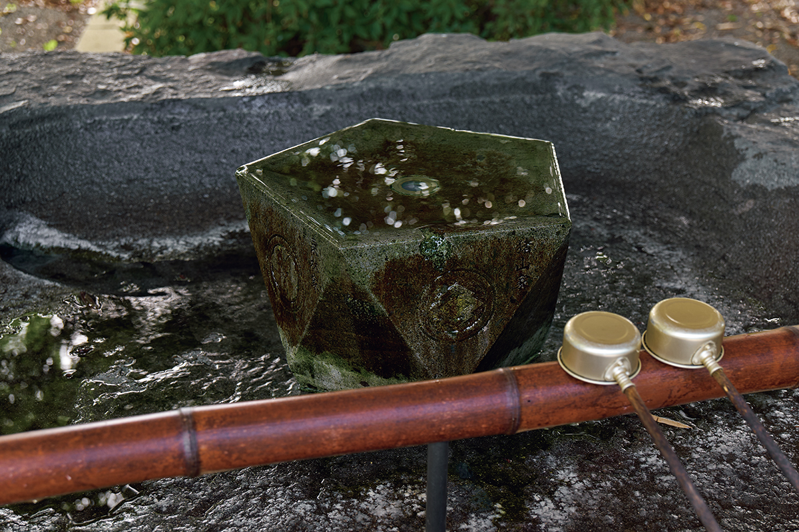
За воротами тории стоит небольшое святилище Горэйся. Его построил в 1882 году глава уезда Укиха, чтобы почитать пятерых старост как хранителей водовода.
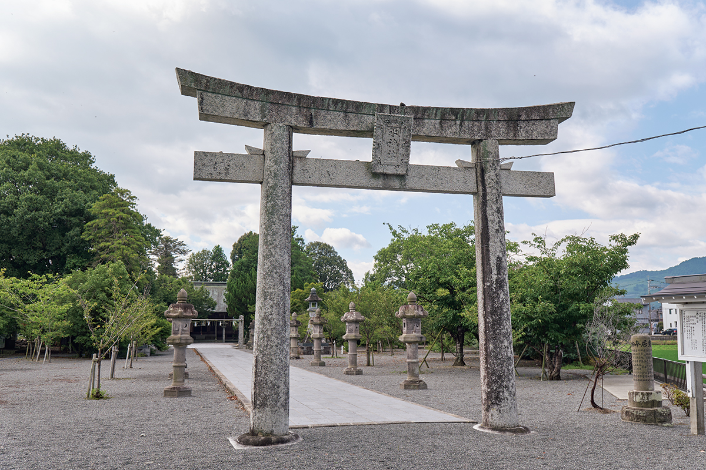
Святилище Нагано-суйдзин
- Адрес
- префектура Фукуока, Укиха, Ёсии-мати, Сакураи, 208-1
- Телефон
- +81 943-77-5611
- Часы работы
- 8:30–17:15
«Унаги-нобори Ёсии»: угорь в каменной чаше
После святилища пора обедать. Хозяин «Унаги-нобори Ёсии» хотел, чтобы блюдо оставалось горячим до последней ложки, и придумал «исигама-мабуси»: рис с угрём в раскалённой каменной чаше.
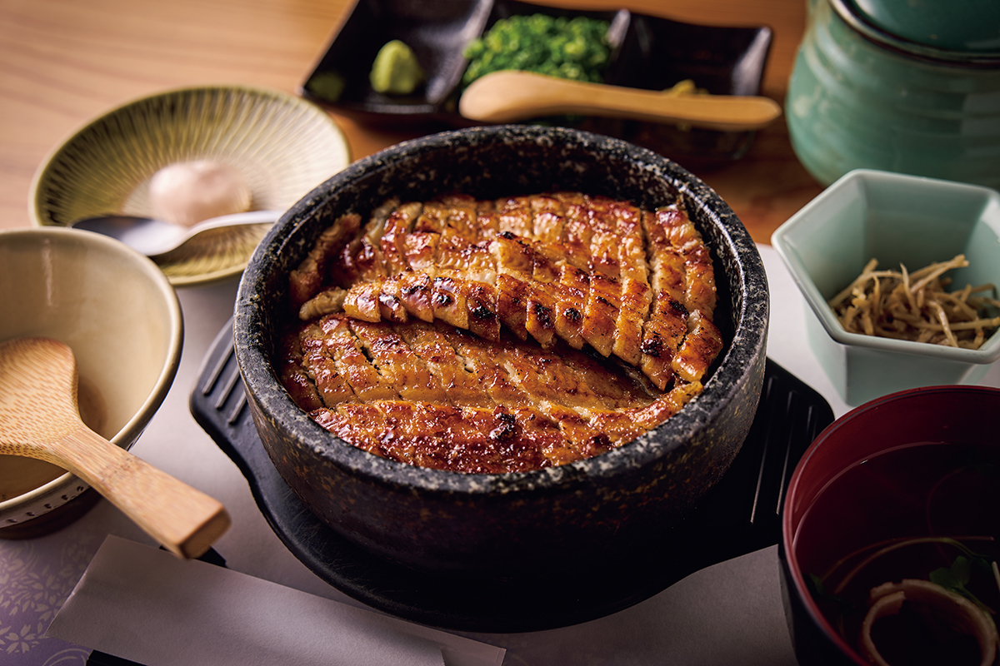
Едят его в три приёма. Сначала пробуют просто так: местный белый рис и мягко зажаренный угорь японского производства. Потом с приправами: пастой юдзу с перцем, васаби, зелёным луком. А в конце заливают бульоном из тунца бонито и доедают как отядзукэ, рис в бульоне. В меню есть и другие блюда из речной рыбы, которую здесь любят: карп и черепаха.
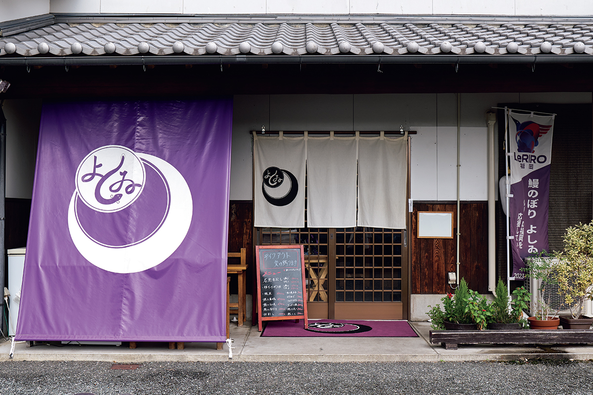
«Унаги-нобори Ёсии»
- Адрес
- префектура Фукуока, Укиха, Ёсии-мати, 1003-20
- Телефон
- +81 90-7454-3175
- Часы работы
- 11:00–15:00, 17:00–20:00
- Выходные
- среда (другие выходные в Instagram)
SHINDO LAB: виски по соседству
Если есть машина, после обеда можно съездить в соседний город Асакура. Компания Shinozaki варит там сакэ больше 230 лет, с эпохи Эдо, а в 2021 году открыла SHINDO LAB: винокурню для виски и винодельню натуральных вин. В 2024 году рядом появился магазин SHINDO LAB STAND. Здесь продают бутылки, которых больше нигде нет, и можно самому налить виски прямо из бочки, что в Японии большая редкость. По вторникам и пятницам по записи водят на экскурсию по винокурне, в 2025 году она стоила 5000 иен.
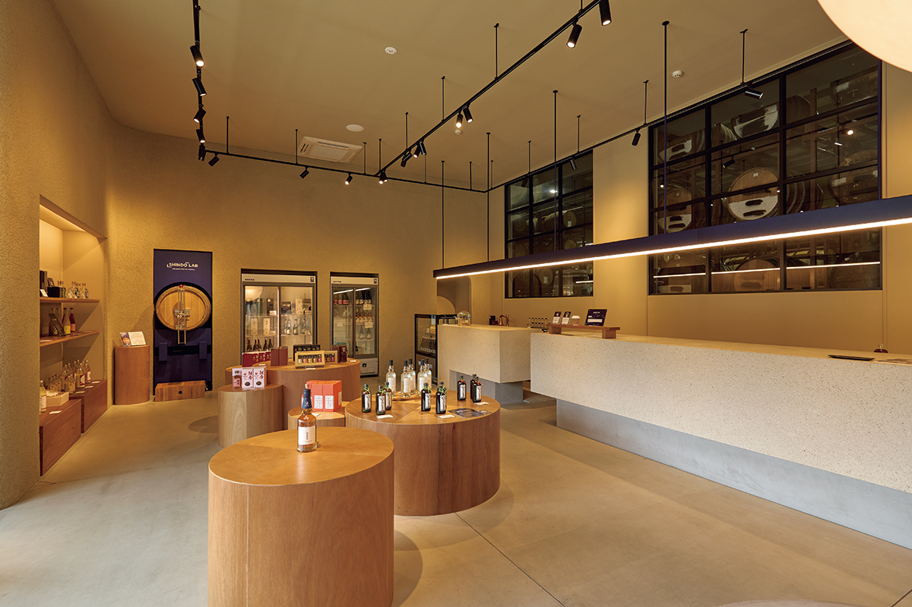
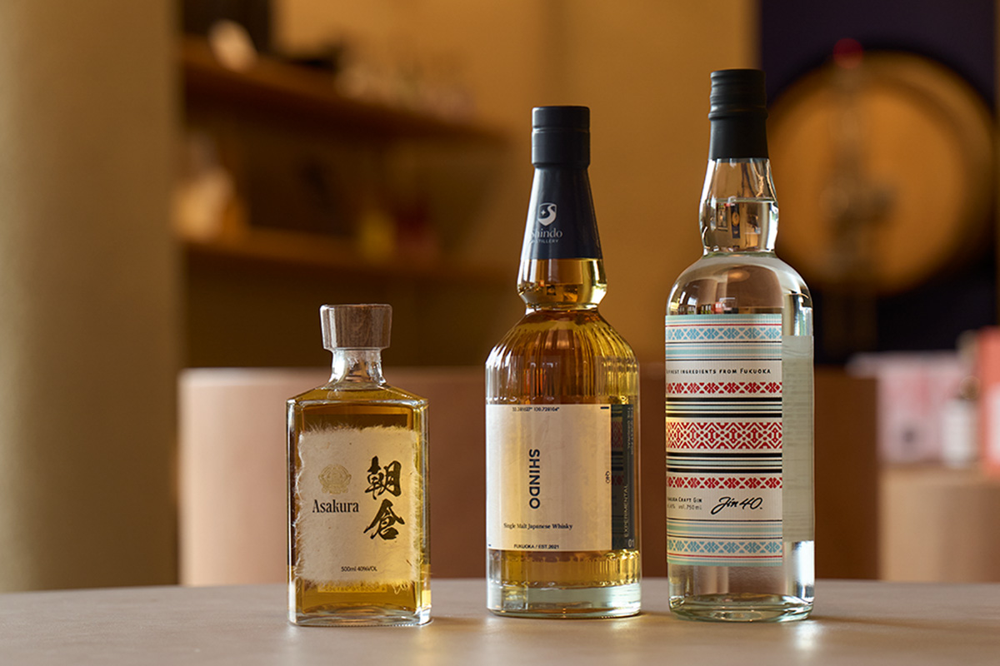
SHINDO LAB
- Цены / Вход
- экскурсия по винокурне 5000 иен с человека, по вторникам и пятницам, по записи
День 2
Ворота, коптильня, керамика и чай
На второй день маршрут ведёт в горы и обратно в старый город: утром святилище с длинной лестницей тории, потом обед из местных продуктов, мастерская керамики, прогулка среди белых стен со сладким и в конце чашка органического чая.
Святилище Укиха-инари
Красные ворота тории, всего их 91, тянутся вверх по склону. Наверху открывается панорама равнины Цукуси. Сюда приходят просить об успехе в торговле и учёбе, о здоровье и хорошем урожае.
Святилище Укиха-инари
- Адрес
- префектура Фукуока, Укиха, Укиха-мати, Нагарэкава, 1513-9
- Сайт
- ukiha-inari.jp
IBIZA SMOKE RESTAURANT
Ресторан стоит в горной деревне. Овощи из Укихи и свинину «Мино» здесь превращают в сытные испанские блюда. Главная гордость кухни это собственные копчёности, их можно купить с собой.
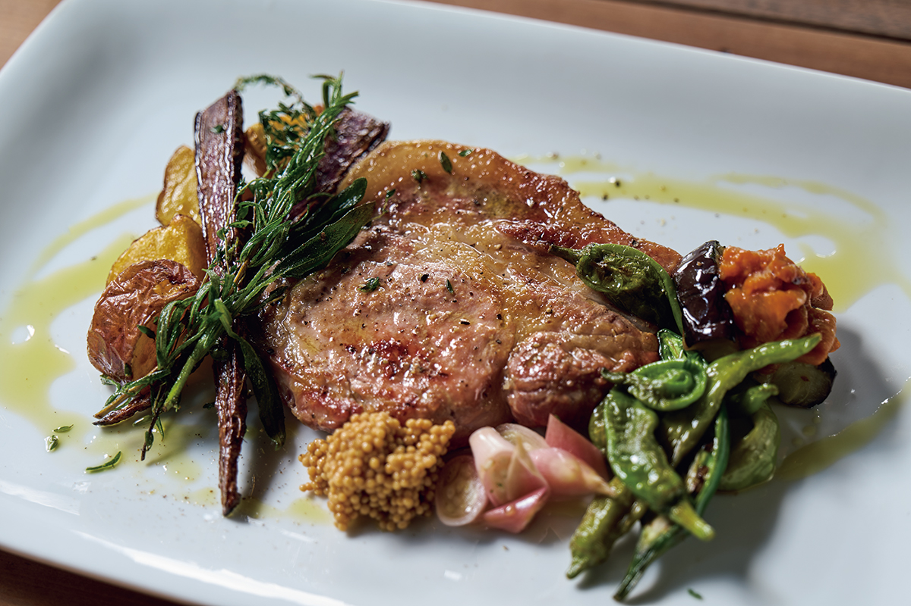
IBIZA SMOKE RESTAURANT
- Адрес
- префектура Фукуока, Укиха, Укиха-мати, Тагомори, 719
- Телефон
- +81 943-77-7828
- Часы работы
- 11:00–15:00 (последний заказ)
- Выходные
- понедельник, вторник, бывают другие выходные; нужна бронь
Керамика Итиносэ в мастерской «Марута-гама»
У мастерской «Марута-гама» история в 400 лет. Здесь работают в редкой технике сиогусури, солёной глазури: во время обжига в печь бросают соль, и она ложится на посуду блестящим налётом. Посуда продолжает линию старой керамики Карацу, и её простые, тёплые узоры собрали много поклонников.
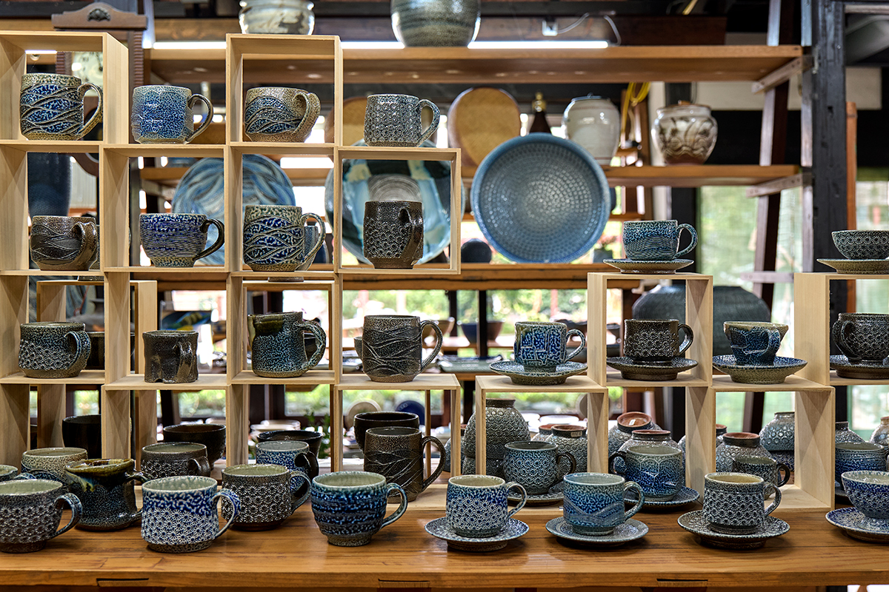
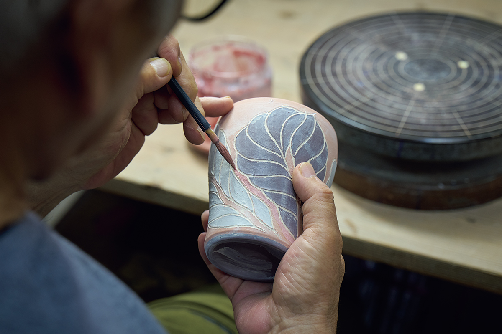
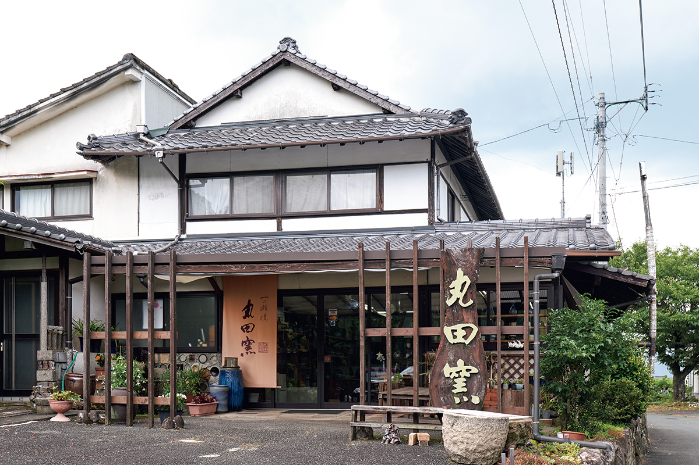
«Итиносэ-яки Марута-гама»
- Адрес
- префектура Фукуока, Укиха, Укиха-мати, Асада, 1133-2
- Телефон
- +81 943-77-2749
- Часы работы
- 9:00–17:00
- Выходные
- нерегулярные
- Сайт
- marutagama.com
«Кавасэми дэнисю»: фрукты на слойке
В квартале белых стен работает пекарня, где пекут только слойки. Сверху кладут сезонные фрукты Укихи, тесто немного хрустит, а под фруктами домашний заварной крем.
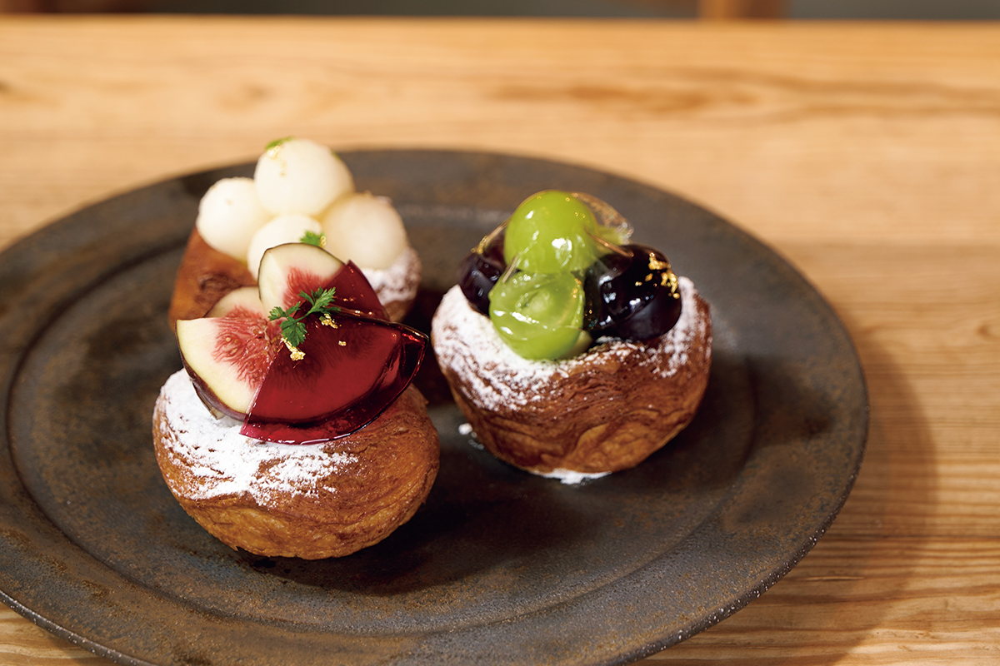
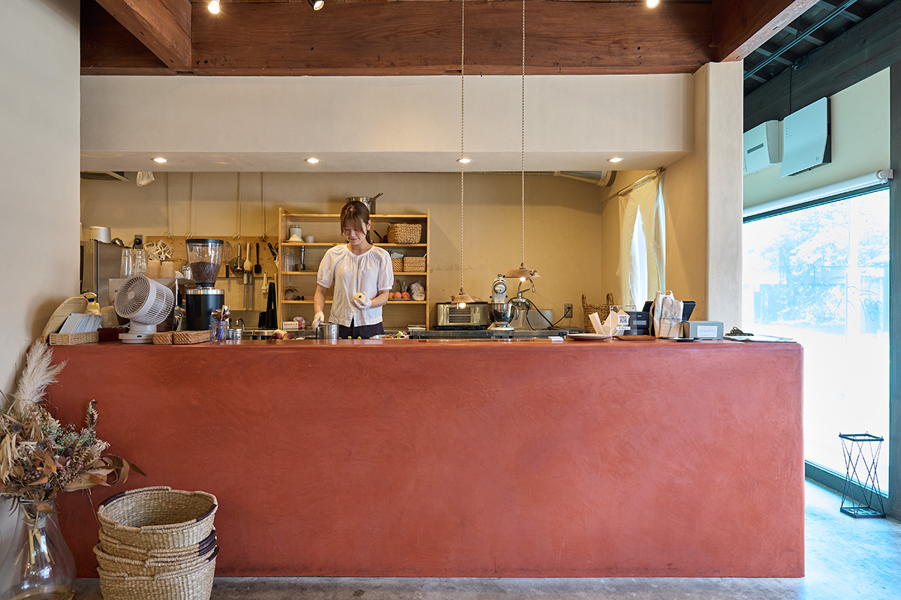
«Кавасэми дэнисю»
- Адрес
- префектура Фукуока, Укиха, Ёсии-мати, 1340
- Телефон
- +81 80-3182-7687
- Часы работы
- понедельник–пятница 12:00–18:00, суббота и воскресенье 10:00–18:00
- Выходные
- среда, четверг
«Укиха-но яматя»: органический чай
Последняя остановка у чайного хозяйства, которое выращивает чай органически и много сил тратит на почву. Листья долго пропаривают, и чай получается густым и мягким, почти без терпкости. Кроме сэнтя здесь делают ходзитю, бантя и чёрный чай.
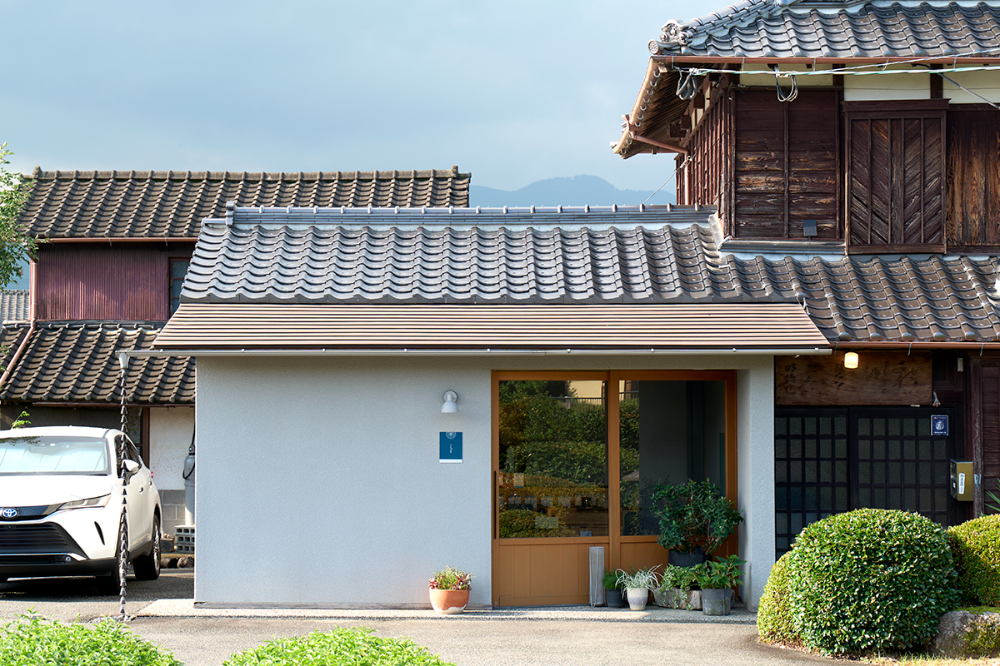
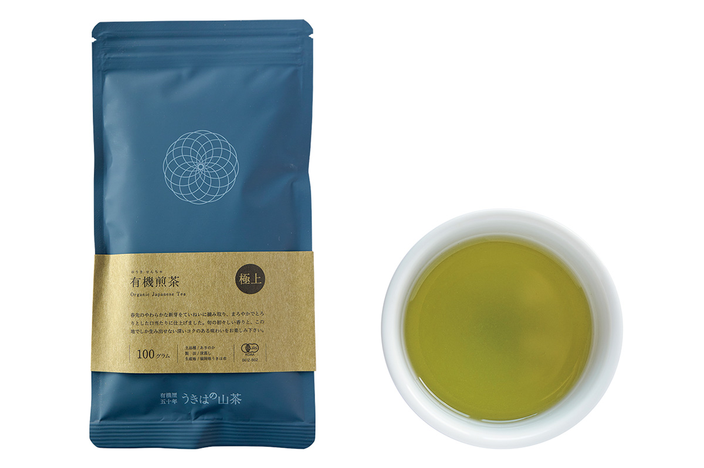
«Укиха-но яматя»
- Адрес
- префектура Фукуока, Укиха, Укиха-мати, Ямакита, 227-2
- Телефон
- +81 943-74-3113
- Часы работы
- 9:30–18:00
- Выходные
- вторник, летние каникулы, новогодние праздники
Книги
MINOU BOOKS & CAFE: книжное кафе в бывшей рыбной лавке
Район Ёсии когда-то жил как почтовая станция на торговом тракте, и старых домов с белыми стенами здесь сохранилось много. Если свернуть с улицы белых стен в переулок, выйдешь к книжному кафе MINOU BOOKS & CAFE.
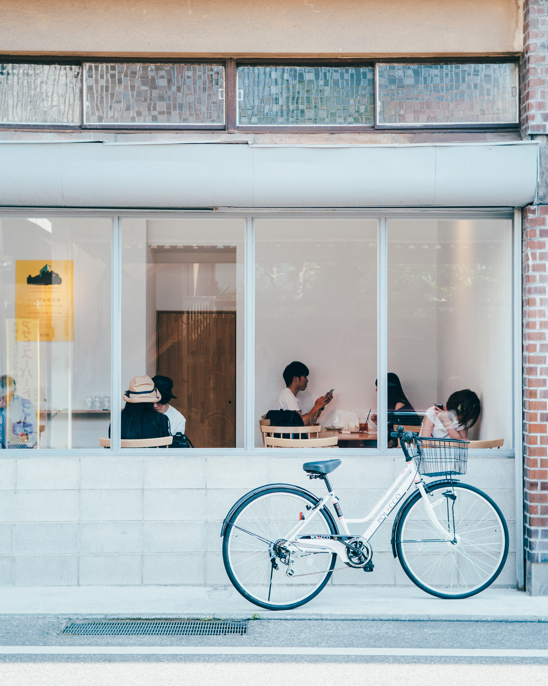
Кафе открылось в сентябре 2015 года в бывшей рыбной лавке, которой было около полувека. Одна стена из голого бетона почти целиком занята большим окном, а маленькие окна под потолком пропускают мягкий дневной свет. Внутри всё белое: слева книжный магазин, справа кафе. На полках постоянно около 1500–2000 книг, и владелец понемногу добавляет новые жанры.
Раньше он шесть лет работал в книжном кафе в Фукуоке. Взяли его туда в кафе, но однажды неожиданно поручили закупать книги и вещи для магазина. Начинал он с нуля и учился сам. Его всегда привлекали не столько книги, сколько книжные магазины, а ещё хотелось когда-нибудь вернуться в родные места. Так в Укихе и появилось это кафе.
Перед открытием владелец отправился на западное побережье США. Он играет на гитаре в группе из Фукуоки, и тамошняя музыка интересовала его не меньше книг.
«На западном побережье культура зинов, самодельных журналов, развита куда сильнее, чем в Японии, и способов высказаться там гораздо больше. У каждого книжного свой ассортимент, двух одинаковых не найти. Мне хотелось сделать магазин, которого больше нигде нет, и я поехал учиться американскому стилю»
владелец MINOU BOOKS & CAFE
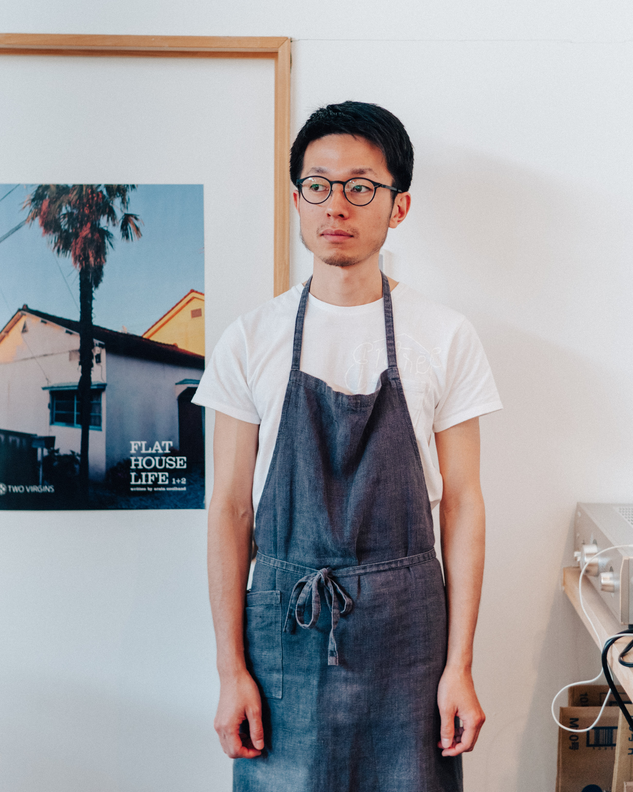
Тема подборки книг здесь «одежда, еда, жильё». Больше всего книг о быте, философии и искусстве, но попадаются и неожиданные полки. Одну из них, с книгами о дикорастущих травах, сделали по просьбе местных покупателей: владельцу важно, чтобы сюда ходили соседи, и он прислушивается к их мнению. Некоторые постоянные гости бывают здесь с самого открытия.
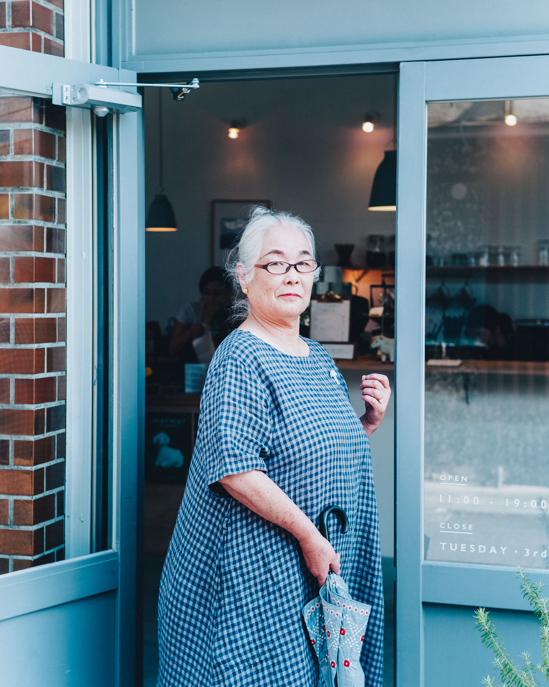
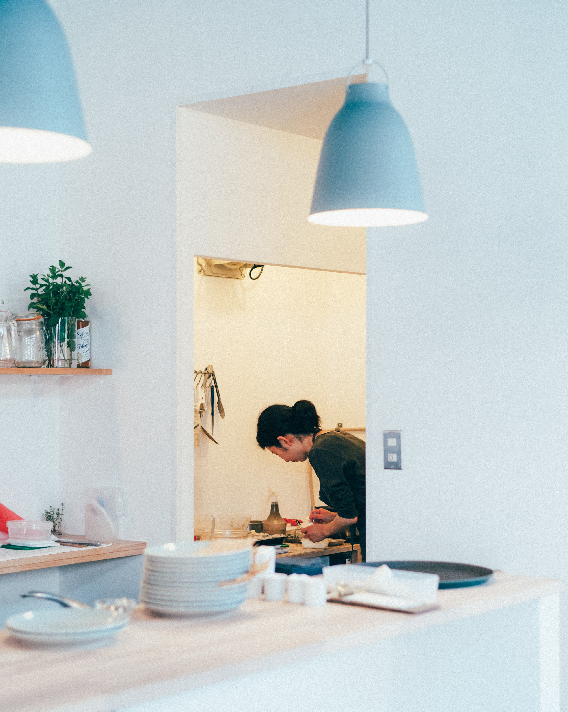
В кафе подают домашние сладости, сэндвичи из местных продуктов, кофе COFFEE COUNTY из соседнего Курумэ, а также чёрный чай и ходзитю местной чайной компании «Синкава сэйтя».
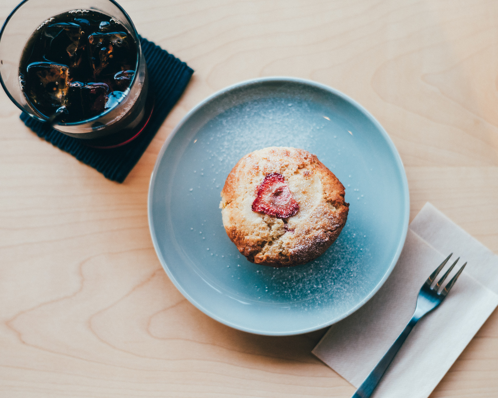
Девиз кафе звучит как «не подстраиваться слишком сильно». Магазин не гонится за модой, крепко держится за своё место и смотрит на мир по-своему, поэтому каждый раз ждёшь, какую книгу найдёшь здесь в следующий раз.
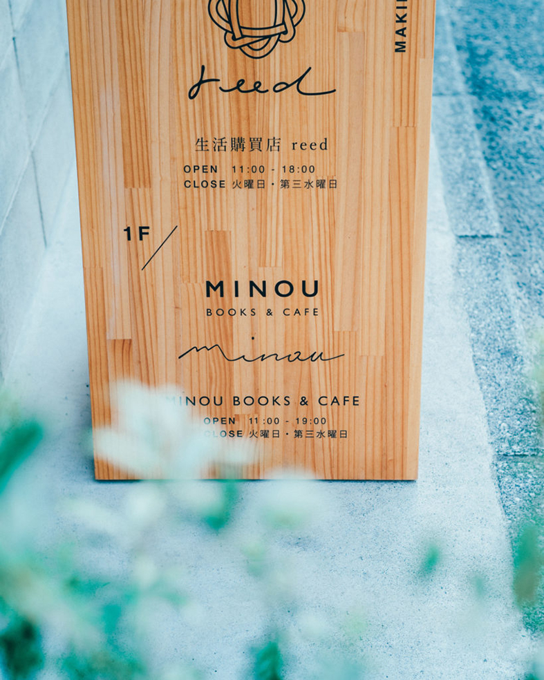
MINOU BOOKS & CAFE
- Адрес
- префектура Фукуока, Укиха, Ёсии-мати, 1137
- Телефон
- +81 943-76-9501
- Часы работы
- 10:00–19:00
- Сайт
- minoubooks.com
Фото: Марико Тая, Кадзумаса Харада.